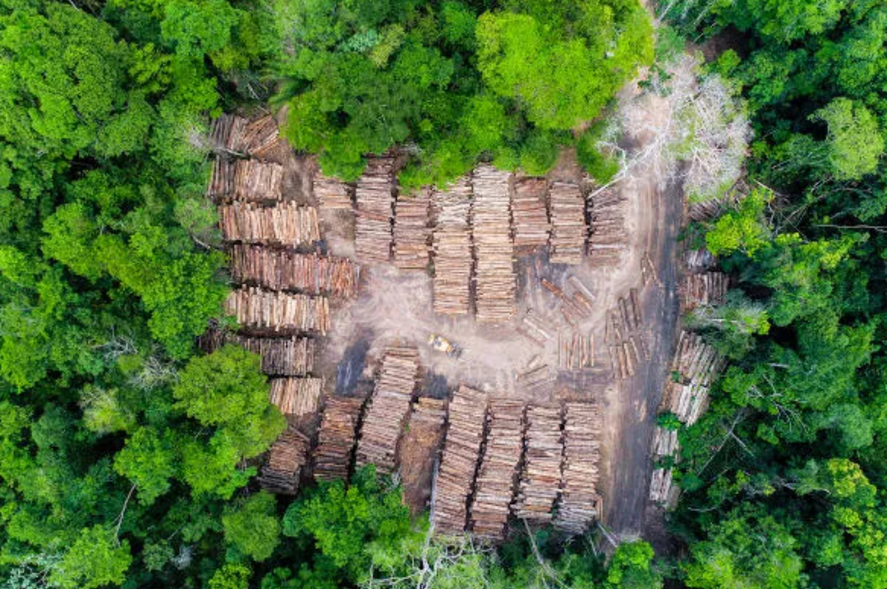

A desigualdade de gênero refere-se as disparidades sociais vírgulas econômicas e políticas entre homens
e mulheres pontos suas causas São multifacetadas vírgulas incluindo normas culturais e sua discriminação,
estereótipos de gênero e a falta de oportunidades iguais.
.

os impactos incluem limitação de acesso à educação, emprego, salário mais baixo para as mulheres, violência
de gênero e subrepresentação em cargos de liderança.
Soluções para a desigualdade de gênero incluem:
a promoção de leis de igualdade de gênero.
empoderamento das mulheres por meio da educação e oportunidades econômicas.
o combate aos estereótipos de gênero e o engajamento de homens na promoção da igualdade.
a conscientização e o ativismo também desempenha um papel importante na luta contra a desigualdade de gênero.